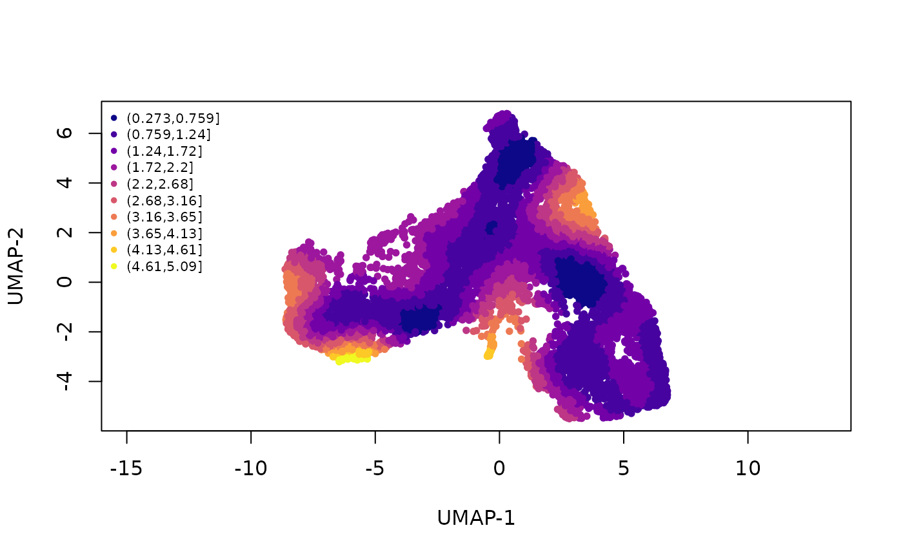
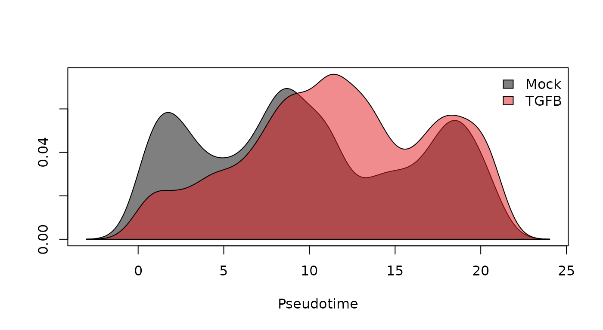
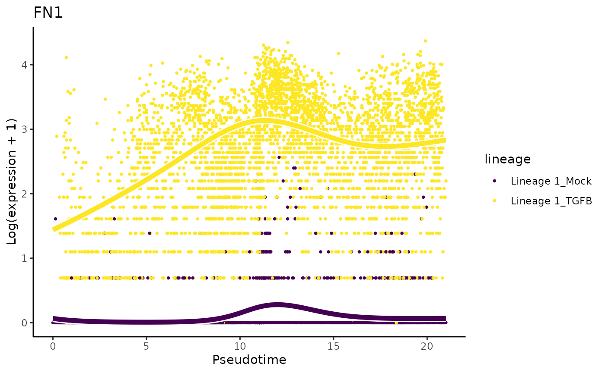
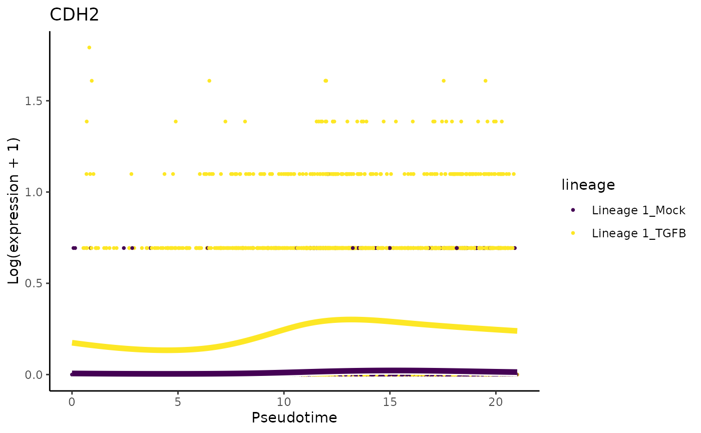

Primary Analysis
Integration
Our dataset contains cells collected from samples undergoing two different treatment conditions which were necessarily collected separately. Hence, we will start with an integration step to combine these two sets of cells, similar to batch correction. Our goal is to remove the technical effects of the different sample collections while preserving any true, biological differences between the two treatment groups.
Data integration and normalization are complex problems and there are a variety of methods addressing each. Interested participants can explore the corresponding chapter of the Bioconductor Ebook. However, since neither is the main focus of this workshop, we elected to use an existing pipeline for these tasks. The full Seurat data integration workflow with SCTransform normalization is described in this vignette.
sce <- bioc2020trajectories::importRawData() ######################## ### Split by condition and convert to Seurat ######################## assays(sce)$logcounts <- log1p(assays(sce)$counts) sceMock <- sce[ ,colData(sce)$pheno$treatment_id=='Mock'] sceTGFB <- sce[ ,colData(sce)$pheno$treatment_id=='TGFB'] library(Seurat) soMock <- as.Seurat(sceMock) soTGFB <- as.Seurat(sceTGFB) ######################## ### Normalize ######################## soMock <- SCTransform(soMock, verbose = FALSE) soTGFB <- SCTransform(soTGFB, verbose = FALSE) ######################## ### Integrate ######################## dtlist <- list(Mock = soMock, TGFB = soTGFB) intfts <- SelectIntegrationFeatures(object.list = dtlist, nfeatures = nrow(sce)) # maxes out at 4080 (why?) dtlist <- PrepSCTIntegration(object.list = dtlist, anchor.features = intfts) anchors <- FindIntegrationAnchors(object.list = dtlist, normalization.method = "SCT", anchor.features = intfts) integrated <- IntegrateData(anchorset = anchors, normalization.method = "SCT") integrated <- RunPCA(integrated) integrated <- RunUMAP(integrated, dims = 1:50) ## convert back to singleCellExperiment sce <- as.SingleCellExperiment(integrated, assay="RNA")
Import dataset
sce <- readRDS("../data/sce.rds")
Differential Topology
Once the two sets of cells have been integrated, we can visualize all the data in one reduced dimension. We also look at the repartition of cells in this space according to the treatment and spatial id.
shuffle <- sample(ncol(sce)) layout(matrix(1:2, nrow = 1)) par(mar = c(4.5,4,1,1)) plot(reducedDims(sce)$UMAP[shuffle, ], asp = 1, pch = 16, xlab = "UMAP-1", ylab = "UMAP-2", col = alpha(c(1:2)[factor(colData(sce)$pheno$treatment_id)][shuffle], alpha = .5)) legend("topright", pch = 16, col = 1:2, bty = "n", legend = levels(factor(colData(sce)$pheno$treatment_id))) plot(reducedDims(sce)$UMAP[shuffle, ], asp = 1, pch = 16, xlab = "UMAP-1", ylab = "UMAP-2", col = alpha(c(3, 4)[factor(colData(sce)$pheno$spatial_id)][shuffle], alpha = .5)) legend("topright", pch = 16, col = 3:4, bty = "n", legend = levels(factor(colData(sce)$pheno$spatial_id)))

We know from biological knowledge that the EMT development goes from the inner to the outer cells. The question is: should we fit a separate trajectory for each condition? We might expect the trajectory itself to be changed by the treatment if it is very large. Otherwise, the treatment will impact the expression profile of some genes but the overal trajectory will be preserved. To help asssess this, we deviced a spatial score. Regions with a very high score indicate places where the cell distribution according to treatment label is far from the overall distribution. Here, we see that, while there are some small regions of imbalance, the gloabl path along the development axis is well-balanced. This means that we can fit a global trajectory to the full dataset.
scores <- bioc2020trajectories::proximity_score( rd = reducedDims(sce)$UMAP, cl = colData(sce)$pheno$treatment_id, k = 20, smooth = 40) grad <- viridis::plasma(10, begin = 0, end = 1) names(grad) <- levels(cut(scores$scaled_scores, breaks = 10)) plot(reducedDims(sce)$UMAP, col = grad[cut(scores$scaled_scores, breaks = 10)], asp = 1, pch = 16, xlab = "UMAP-1", ylab = "UMAP-2", cex = .8) legend("topleft", legend = names(grad), col = grad, pch = 16, bty = "n", cex = 2 / 3)

Trajectory Inference
We perform trajectory inference to order the cells according to EMT progression. We use slingshot for trajectory inference, with the cells’ position (inner or outer) serving as the cluster identifier. This ensures that we will only find a single lineage while still allowing suffiecient flexibility to correctly orient the pseudotime axis.
Note that we perform trajectory inference using cells from both conditions, rather than splitting the data into two groups. This choice allows us to use the maximum amount of data in the construction of our trajectory, which should lead to more robust results than separate, potentially noisey trajectories constructed on subsets of the data. As we will see, not all cell types are necessarily present in every condition, so this approach ensures that our trajectory accounts for all cell types present in the overall data.
library(slingshot) sce <- slingshot(sce, reducedDim = 'UMAP', clusterLabels = colData(sce)$pheno$spatial_id, start.clus = 'inner', approx_points = 150)
## Using full covariance matrix## Warning in if (class(X) == "dist") X <- as.matrix(X): the condition has length >
## 1 and only the first element will be usedDifferential progression
Now that we have ordered the cells by EMT progression, we can begin to address the main question: how is this progression affected by TGF-\(\beta\) treatment? In this section, we interpret this question as a univariate analysis of the pseudotime values between the two groups.

The density estimates for the two groups show a trimodal distribution for the untreated cells, but a tendancy toward later pseudotime values in the TGF-\(\beta\) treated cells. The difference is striking enough that a standard T-test would likely be significant, but we are we are interested more generally in differences between the two distributions, not just the difference of means (one could imagine a scenario in which the treated group tended toward the extremes, but the means were the same). Hence, we propose a Kolmogorov-Smirnov Test to assess whether the two groups of pseudotime values are derived from the same distribution.
######################## ### Kolmogorov-Smirnov Test ######################## ks.test(slingPseudotime(sce)[colData(sce)$pheno$treatment_id == "Mock", 1], slingPseudotime(sce)[colData(sce)$pheno$treatment_id == "TGFB", 1])
As we might expect, this test is highly signifcant, so we can conclude that there are differences between the two distributions.
Differential expression
We will now proceed to discover genes whose expression changes along the trajectory, or between the two lineages of each trajectory using the Bioconductor package tradeSeq. For each condition (i.e., mock and TGF-Beta), a smooth average expression profile along pseudotime will be estimated for each gene, using a negative binomial model. Each differential expression hypothesis of interest will then be translated into testing a linear combination of the parameters of this smoothed expression estimate.
Assess DE along pseudotime (or pseudospace)
Note that the axis represented by the trajectory in this dataset is actually the migration of cells from the epithelium to the mesenchyme and therefore could also be looked at as a space dimension, although it is likely to be correlated with chronological time, too.
To assess significant changes in gene expression as a function of pseudotime within each lineage, we use the associationTest, which tests the null hypothesis that gene expression is not a function of pseudotime, i.e., whether the estimated smoothers are significantly varying as a function of pseudotime within each lineage. The lineages=TRUE argument specifies that we would like the results for each lineage separately, asides from the default global test, which tests for significant associations across all lineages in the trajectory simultaneously. Further, we specify a log2 fold change cut-off to test against using the l2fc argument.
On a lineage-specific basis, there are over twice as much DE genes in the mock lineage (2398) as compared to the TGFB lineage (1013). Many of the DE genes in the TGFB condition are also DE in the Mock condition, around 80%.
The authors of the original paper found \(1105\) DE genes on a FDR level of \(1e-10\) for the Mock condition.
assocRes <- associationTest(sce, lineages = TRUE, l2fc=log2(2)) mockGenes <- rownames(assocRes)[which(p.adjust(assocRes$pvalue_lineage1_conditionMock, "fdr") <= 0.05)] tgfbGenes <- rownames(assocRes)[which(p.adjust(assocRes$pvalue_lineage1_conditionTGFB, "fdr") <= 0.05)] length(mockGenes)
## [1] 2398length(tgfbGenes)
## [1] 1013
Visualization of DE genes
Below we visualize and cluster the genes whose expression vary over pseudotime. As was also observed in the original manuscript, genes are mainly upregulated at the start- or endpoints of the lineage.
### based on mean smoother yhatSmooth <- predictSmooth(sce, gene=mockGenes, nPoints=50) heatSmooth <- pheatmap(t(scale(t(yhatSmooth[,1:50]))), cluster_cols = FALSE, show_rownames = FALSE, show_colnames=FALSE)

## the hierarchical trees constructed here, can also be used for ## clustering of the genes according to their average expression pattern. cl <- sort(cutree(heatSmooth$tree_row, k=6)) table(cl)
## cl
## 1 2 3 4 5 6
## 269 778 197 740 338 76conditions <- colData(sce)$pheno$treatment_id pt1 <- colData(sce)$slingshot$pseudotime ### based on fitted values (plotting takes a while to run) yhatCell <- predictCells(sce, gene=mockGenes) yhatCellMock <- yhatCell[,conditions == "Mock"] # order according to pseudotime ooMock <- order(pt1[conditions == "Mock"], decreasing=FALSE) yhatCellMock <- yhatCellMock[,ooMock] pheatmap(t(scale(t(yhatCellMock))), cluster_cols = FALSE, show_rownames = FALSE, show_colnames=FALSE)
Gene set enrichment analysis on genes from the Mock condition
Gene set enrichment analysis on the DE genes within the mock condition confirms the biology on epithelial cell differentiation.
## C5 category is according to gene ontology grouping: https://www.ncbi.nlm.nih.gov/pmc/articles/PMC4707969/pdf/nihms-743907.pdf geneSets <- msigdbr(species = "Mus musculus", category = "C5", subcategory = "BP") ### filter background to only include genes that we assessed. geneSets$gene_symbol <- toupper(geneSets$gene_symbol) geneSets <- geneSets[geneSets$gene_symbol %in% names(sce),] m_list <- geneSets %>% split(x = .$gene_symbol, f = .$gs_name) stats <- assocRes$waldStat_lineage1_conditionMock names(stats) <- rownames(assocRes) eaRes <- fgsea(pathways = m_list, stats=stats, nperm=5e4, minSize=10)
## Warning in fgsea(pathways = m_list, stats = stats, nperm = 50000, minSize = 10):
## You are trying to run fgseaSimple. It is recommended to use fgseaMultilevel. To
## run fgseaMultilevel, you need to remove the nperm argument in the fgsea function
## call.## Warning in preparePathwaysAndStats(pathways, stats, minSize, maxSize, gseaParam, : There are ties in the preranked stats (0.01% of the list).
## The order of those tied genes will be arbitrary, which may produce unexpected results.| pathway | pval | padj |
|---|---|---|
| GO_MITOTIC_CELL_CYCLE | 0.0000200 | 0.0787184 |
| GO_EPITHELIUM_DEVELOPMENT | 0.0000800 | 0.1012094 |
| GO_CELL_CYCLE | 0.0001000 | 0.1012094 |
| GO_EPIDERMIS_DEVELOPMENT | 0.0001400 | 0.1012094 |
| GO_SKIN_DEVELOPMENT | 0.0001400 | 0.1012094 |
| GO_EPITHELIAL_CELL_DIFFERENTIATION | 0.0001600 | 0.1012094 |
| GO_NEGATIVE_REGULATION_OF_CELLULAR_COMPONENT_ORGANIZATION | 0.0001800 | 0.1012094 |
| GO_PROTEOLYSIS | 0.0002200 | 0.1049579 |
| GO_MITOTIC_NUCLEAR_DIVISION | 0.0002400 | 0.1049579 |
| GO_CELL_CYCLE_PROCESS | 0.0002800 | 0.1102058 |
| GO_REGULATION_OF_MODIFICATION_OF_SYNAPTIC_STRUCTURE | 0.0003208 | 0.1147704 |
| GO_ORGANELLE_FISSION | 0.0003800 | 0.1246375 |
| GO_CYTOSKELETON_ORGANIZATION | 0.0004800 | 0.1405686 |
| GO_EPIDERMAL_CELL_DIFFERENTIATION | 0.0005000 | 0.1405686 |
| GO_REGULATION_OF_ORGANELLE_ORGANIZATION | 0.0005400 | 0.1416932 |
| GO_KERATINOCYTE_DIFFERENTIATION | 0.0006400 | 0.1574369 |
| GO_CHROMOSOME_ORGANIZATION | 0.0007600 | 0.1681712 |
| GO_REGULATION_OF_NUCLEAR_DIVISION | 0.0008200 | 0.1681712 |
| GO_REGULATION_OF_DENDRITE_MORPHOGENESIS | 0.0009000 | 0.1681712 |
| GO_CELL_DIVISION | 0.0009400 | 0.1681712 |
Differential expression between conditions
In the following sections, we will investigate differential expression for each gene, between the two conditions, i.e., the mock and TGF-Beta conditions.
EDA
The paper mentions that CDH1 and CRB3 should be expressed in similar kinetics. Note that the lower slope of CDH1 is also observed in the paper.
plotSmoothers(sce, assays(sce)$counts, gene="CDH1", alpha=1, border=TRUE) + ggtitle("CDH1")

plotSmoothers(sce, assays(sce)$counts, gene="CRB3", alpha=1, border=TRUE) + ggtitle("CRB3")

They also mention that ‘only cells treated with TGF-Beta and positioned at the outer extreme of the trajectory expressed robust levels of FN1 and CDH2’.
plotSmoothers(sce, assays(sce)$counts, gene="FN1", alpha=1, border=TRUE) + ggtitle("FN1")

plotSmoothers(sce, assays(sce)$counts, gene="CDH2", alpha=1, border=TRUE) + ggtitle("CDH2")

Differential expression analysis
To test differential expression between conditions, we use the conditionTest function implemented in tradeSeq. This function tests the null hypothesis that genes have identical expression patterns in each condition. We discover \(1993\) genes that are DE with a fold change higher than \(2\) or lower than \(1/2\).
condRes <- conditionTest(sce, l2fc=log2(2)) condRes$padj <- p.adjust(condRes$pvalue, "fdr") mean(condRes$padj <= 0.05, na.rm=TRUE)
## [1] 0.1890175sum(condRes$padj <= 0.05, na.rm=TRUE)
## [1] 1993Visualize most and least significant gene
# plot genes oo <- order(condRes$waldStat, decreasing=TRUE) # most significant gene plotSmoothers(sce, assays(sce)$counts, gene=rownames(assays(sce)$counts)[oo[1]], alpha=1, border=TRUE)

# least significant gene plotSmoothers(sce, assays(sce)$counts, gene=rownames(assays(sce)$counts)[oo[nrow(sce)]], alpha=1, border=TRUE)

Heatmaps of genes DE between conditions
Below we show heatmaps of the genes DE between conditions. The DE genes in the heatmaps are ordered according to a hierarchical clustering on the TGF-Beta condition.
### based on mean smoother yhatSmooth <- predictSmooth(sce, gene=conditionGenes, nPoints=50) heatSmooth_TGF <- pheatmap(t(scale(t(yhatSmooth[,51:100]))), cluster_cols = FALSE, show_rownames = FALSE, show_colnames=FALSE, main="TGF-Beta", legend=FALSE, silent = TRUE) matchingHeatmap_mock <- pheatmap(t(scale(t(yhatSmooth[heatSmooth_TGF$tree_row$order,1:50]))), cluster_cols = FALSE, cluster_rows = FALSE, show_rownames = FALSE, show_colnames=FALSE, main="Mock", legend=FALSE, silent = TRUE) grid.arrange(heatSmooth_TGF[[4]], matchingHeatmap_mock[[4]], ncol=2)

Gene set enrichment analysis
Gene set enrichment analysis on genes that are differentially expressed between conditions finds evidence for cell motility, cell junctions/adhesion and gastrulation. The original paper also focusses on the KRAS signaling pathway, which induces cell migration, amongst others. Other related processes include morphogenesis, gastrulation and cell adhesion.
statsCond <- condRes$waldStat names(statsCond) <- rownames(condRes) eaRes <- fgsea(pathways = m_list, stats=statsCond, nperm=5e4, minSize=10)
## Warning in fgsea(pathways = m_list, stats = statsCond, nperm = 50000,
## minSize = 10): You are trying to run fgseaSimple. It is recommended to use
## fgseaMultilevel. To run fgseaMultilevel, you need to remove the nperm argument
## in the fgsea function call.## Warning in preparePathwaysAndStats(pathways, stats, minSize, maxSize, gseaParam, : There are ties in the preranked stats (0.04% of the list).
## The order of those tied genes will be arbitrary, which may produce unexpected results.## Warning in fgseaSimple(...): There were 1 pathways for which P-values were not
## calculated properly due to unbalanced gene-level statistic values| pathway | pval | padj |
|---|---|---|
| GO_BIOLOGICAL_ADHESION | 0.0000200 | 0.0393892 |
| GO_LOCOMOTION | 0.0000200 | 0.0393892 |
| GO_CELL_MOTILITY | 0.0000600 | 0.0787784 |
| GO_REGULATION_OF_CELL_ADHESION | 0.0001200 | 0.1181676 |
| GO_ANATOMICAL_STRUCTURE_FORMATION_INVOLVED_IN_MORPHOGENESIS | 0.0001600 | 0.1260455 |
| GO_TRANSCRIPTION_BY_RNA_POLYMERASE_III | 0.0002200 | 0.1444271 |
| GO_REGULATION_OF_MITOCHONDRIAL_GENE_EXPRESSION | 0.0003400 | 0.1913190 |
| GO_EXTRACELLULAR_STRUCTURE_ORGANIZATION | 0.0007600 | 0.3741975 |
| GO_MITOCHONDRIAL_RNA_METABOLIC_PROCESS | 0.0009800 | 0.3999520 |
| GO_REGULATION_OF_CELLULAR_COMPONENT_MOVEMENT | 0.0011800 | 0.3999520 |
| GO_REGULATION_OF_CELL_POPULATION_PROLIFERATION | 0.0013000 | 0.3999520 |
| GO_CARDIOVASCULAR_SYSTEM_DEVELOPMENT | 0.0013200 | 0.3999520 |
| GO_N_TERMINAL_PROTEIN_AMINO_ACID_MODIFICATION | 0.0013200 | 0.3999520 |
| GO_CIRCULATORY_SYSTEM_DEVELOPMENT | 0.0016600 | 0.4495004 |
| GO_GASTRULATION | 0.0018200 | 0.4495004 |
| GO_CELL_JUNCTION_ORGANIZATION | 0.0018600 | 0.4495004 |
| GO_TUBE_DEVELOPMENT | 0.0019400 | 0.4495004 |
| GO_CELL_JUNCTION_ASSEMBLY | 0.0023400 | 0.4975479 |
| GO_MOTOR_NEURON_AXON_GUIDANCE | 0.0024000 | 0.4975479 |
| GO_POSITIVE_REGULATION_OF_MULTICELLULAR_ORGANISMAL_PROCESS | 0.0025399 | 0.5002430 |